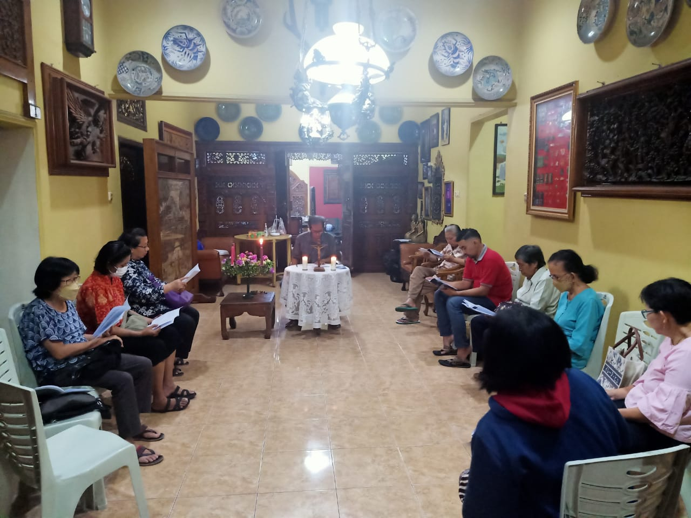
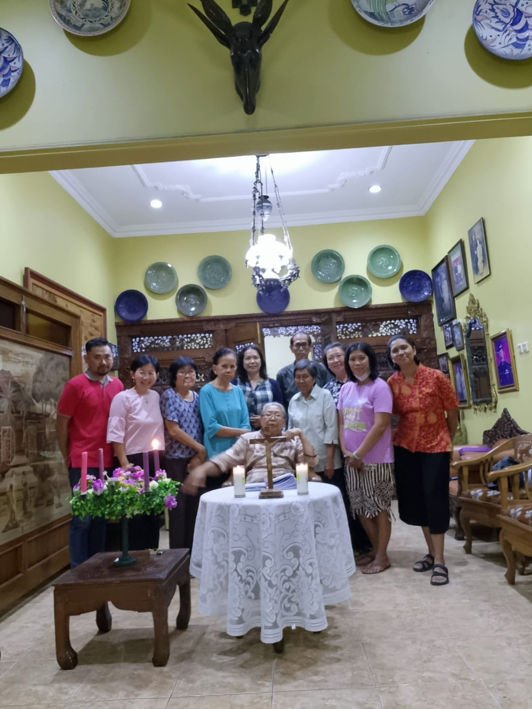

<!DOCTYPE html>
<html xmlns="http://www.w3.org/1999/xhtml" lang="en" xml:lang="en"><head>

<meta charset="utf-8">
<meta name="generator" content="quarto-1.3.353">

<meta name="viewport" content="width=device-width, initial-scale=1.0, user-scalable=yes">

<meta name="author" content="">
<meta name="dcterms.date" content="2023-12-07">

<title>Beranda - Percakapan Rohani Adven ke 1: Bapa Sang Pencipta Kehidupan</title>
<style>
code{white-space: pre-wrap;}
span.smallcaps{font-variant: small-caps;}
div.columns{display: flex; gap: min(4vw, 1.5em);}
div.column{flex: auto; overflow-x: auto;}
div.hanging-indent{margin-left: 1.5em; text-indent: -1.5em;}
ul.task-list{list-style: none;}
ul.task-list li input[type="checkbox"] {
  width: 0.8em;
  margin: 0 0.8em 0.2em -1em; /* quarto-specific, see https://github.com/quarto-dev/quarto-cli/issues/4556 */ 
  vertical-align: middle;
}
</style>


<script src="../../../site_libs/quarto-nav/quarto-nav.js"></script>
<script src="../../../site_libs/quarto-nav/headroom.min.js"></script>
<script src="../../../site_libs/clipboard/clipboard.min.js"></script>
<script src="../../../site_libs/quarto-search/autocomplete.umd.js"></script>
<script src="../../../site_libs/quarto-search/fuse.min.js"></script>
<script src="../../../site_libs/quarto-search/quarto-search.js"></script>
<meta name="quarto:offset" content="../../../">
<script src="../../../site_libs/quarto-html/quarto.js"></script>
<script src="../../../site_libs/quarto-html/popper.min.js"></script>
<script src="../../../site_libs/quarto-html/tippy.umd.min.js"></script>
<script src="../../../site_libs/quarto-html/anchor.min.js"></script>
<link href="../../../site_libs/quarto-html/tippy.css" rel="stylesheet">
<link href="../../../site_libs/quarto-html/quarto-syntax-highlighting-dark.css" rel="stylesheet" id="quarto-text-highlighting-styles">
<script src="../../../site_libs/bootstrap/bootstrap.min.js"></script>
<link href="../../../site_libs/bootstrap/bootstrap-icons.css" rel="stylesheet">
<link href="../../../site_libs/bootstrap/bootstrap.min.css" rel="stylesheet" id="quarto-bootstrap" data-mode="dark">
<script id="quarto-search-options" type="application/json">{
  "location": "navbar",
  "copy-button": false,
  "collapse-after": 3,
  "panel-placement": "end",
  "type": "overlay",
  "limit": 20,
  "language": {
    "search-no-results-text": "No results",
    "search-matching-documents-text": "matching documents",
    "search-copy-link-title": "Copy link to search",
    "search-hide-matches-text": "Hide additional matches",
    "search-more-match-text": "more match in this document",
    "search-more-matches-text": "more matches in this document",
    "search-clear-button-title": "Clear",
    "search-detached-cancel-button-title": "Cancel",
    "search-submit-button-title": "Submit"
  }
}</script>


<link rel="stylesheet" href="../../../styles.css">
</head>

<body class="nav-fixed fullcontent">

<div id="quarto-search-results"></div>
  <header id="quarto-header" class="headroom fixed-top">
    <nav class="navbar navbar-expand-lg navbar-dark ">
      <div class="navbar-container container-fluid">
      <div class="navbar-brand-container">
    <a class="navbar-brand" href="../../../index.html">
    <span class="navbar-title">Beranda</span>
    </a>
  </div>
            <div id="quarto-search" class="" title="Search"></div>
          <button class="navbar-toggler" type="button" data-bs-toggle="collapse" data-bs-target="#navbarCollapse" aria-controls="navbarCollapse" aria-expanded="false" aria-label="Toggle navigation" onclick="if (window.quartoToggleHeadroom) { window.quartoToggleHeadroom(); }">
  <span class="navbar-toggler-icon"></span>
</button>
          <div class="collapse navbar-collapse" id="navbarCollapse">
            <ul class="navbar-nav navbar-nav-scroll me-auto">
  <li class="nav-item">
    <a class="nav-link" href="../../../about.html" rel="" target="">
 <span class="menu-text">Sekilas</span></a>
  </li>  
  <li class="nav-item">
    <a class="nav-link" href="https://instagram.com/lingkungan_st.andreas_pwt?igshid=MzMyNGUyNmU2YQ==" rel="" target=""><i class="bi bi-instagram" role="img">
</i> 
 <span class="menu-text">Instagram</span></a>
  </li>  
</ul>
            <div class="quarto-navbar-tools ms-auto">
</div>
          </div> <!-- /navcollapse -->
      </div> <!-- /container-fluid -->
    </nav>
</header>
<!-- content -->
<div id="quarto-content" class="quarto-container page-columns page-rows-contents page-layout-article page-navbar">
<!-- sidebar -->
<!-- margin-sidebar -->
    
<!-- main -->
<main class="content" id="quarto-document-content">

<header id="title-block-header" class="quarto-title-block default">
<div class="quarto-title">
<h1 class="title">Percakapan Rohani Adven ke 1: Bapa Sang Pencipta Kehidupan</h1>
  <div class="quarto-categories">
    <div class="quarto-category">adven</div>
    <div class="quarto-category">pendalaman iman</div>
  </div>
  </div>


<div class="quarto-title-meta">

    
    <div>
    <div class="quarto-title-meta-heading">Published</div>
    <div class="quarto-title-meta-contents">
      <p class="date">December 7, 2023</p>
    </div>
  </div>
  
    
  </div>
  

</header>

<table class="table">
<colgroup>
<col style="width: 33%">
<col style="width: 33%">
<col style="width: 33%">
</colgroup>
<tbody>
<tr class="odd">
<td></td>
<td></td>
<td></td>
</tr>
</tbody>
</table>
<p>Gereja Keuskupan Purwokerto dalam bimbingan Roh Kudus bercita-cita menjadi <em>paguyuban umat Allah yang beriman mendalam, tangguh, dan dialogal serta sejahtera demi terwujudnya persaudaraan sejati, kehidupan bersama yang bermartabat dan berkeadilan, serta keutuhan ciptaan</em>. Demikianlah visi Keuskupan Purwokerto yang mulai dihidupi sejak medio 2021. Salah satu upaya menghidupi visi tersebut adalah dengan diselenggarakannya program Paroki Mengajar.<br>
</p>
<p>Kurang lebih enam bulan, kita sebagai Gereja Keuskupan Purwokerto bergerak bersama untuk saling belajar tentang dasar iman katolik kita, yaitu Credo. Tentu banyak pengalaman dan pengetahuan yang kita dapatkan bersama selama satu semester ini. Bisa jadi, di suatu tempat terjadi antusiasme di awal saja. Namun, di lain tempat, dijumpai adanya konsistensi umat untuk belajar bersama. Apapun dinamika yang terjadi di lingkungan atau paroki masing-masing, itu adalah hal yang patut disyukuri bersama.<br>
</p>
<p>Pada kesempatan Pendalaman Adven 2023 ini, kami ingin mengajak Anda semua untuk mengendapkan pengalaman dan pengetahuan yang selama ini kita miliki, secara khusus dalam dinamika Paroki Mengajar atau Pendalaman Iman tentang Credo. Pengendapan ini selain untuk sedikit melihat dan mengumpulkan segala hal yang telah kita dapatkan dalam kegiatan Paroki Mengajar, juga sebagai sarana kita mempersiapkan kedatangan Sang Juruselamat, Yesus Kristus. Harapannya, Pendalaman Adven tahun ini membantu kita untuk semakin meletakkan Kristus sebagai pusat dan sumber hidup; tidak hanya berdasarkan pengalaman iman, melainkan juga berdasarkan pengetahuan iman.<br>
</p>
<p>Tema <strong>“Aku tahu kepada siapa aku percaya”</strong> yang disampaikan dalam surat yang kedua Rasul Paulus kepada Timotius (2Tim 1:12) menjadi penutup yang manis sekaligus kuat. Kita menutup rangkaian pendalaman Credo dengan ungkapan yang tegas dan meneguhkan. Meskipun misteri Allah Tritunggal Mahakudus tidak akan pernah habis dikupas, tetapi iman kita yang semakin kuat akarnya akan membantu kita menghayati kekatolikan kita dengan penuh kasih dan kaya akan pengharapan.<br>
</p>
<p>Tema pertemuan pertama : <strong>“Bapa Sang Pencipta Kehidupan”</strong><br>
</p>
<p><strong>Tujuan</strong></p>
<ul>
<li>Mengumpulkan pengalaman dipelihara Allah dan memelihara karya ciptaan Allah.<br>
</li>
<li>Menumbuhkan semangat solidaritas terhadap ciptaan Allah yang lain.<br>
</li>
</ul>
<p><strong>Pengantar</strong></p>
<p>Memiliki iman berarti memiliki kepercayaan. Syahadat yang kita ucapkan setiap hari Minggu adalah satu contoh bahwa kita memiliki kepercayaan kepada Allah Bapa, Allah Putera, dan Allah Roh Kudus. Dengan mengucapkan Syahadat, kita sadar sungguh bahwa iman yang kita hidupi adalah berasal dari Allah yang mengutus Putera-Nya, Yesus Kristus, untuk menyelamatkan dunia. Karya penyelamatan itu tidak terlepas dari persekutuan dengan Roh Kudus menyertai kita sampai hari ini.<br>
Karya penyelamatan tidak dapat dipisahkan dari Karya Penciptaan yang dibuat oleh Allah Bapa bersama Allah Putra dan Allah Roh Kudus. Allah menciptakan segala sesuatu baik adanya, seperti yang diceritakan dalam Kitab Kejadian. Allah pun terus mencipta sampai hari ini dan tentu saja, Allah terus memelihara ciptaan-ciptaan-Nya dengan kasih.<br>
Pada pertemuan Pendalaman Adven yang pertama ini, kita akan merenungkan kasih pemeliharaan Allah Bapa Sang Pencipta. Di samping itu, kita pun diajak untuk menumbuhkan solidaritas terhadap ciptaan lain, di mana kita manusia diberikan tanggung jawab untuk berkuasa atas mereka.<br>
</p>
<p><strong>Inspirasi Hidup</strong></p>
<p>KISAH INSPIRATIF PANDAWARA GROUP : LIMA ANAK MUDA BERSIHKAN SUNGAI DENGAN MODAL SENDIRI IDXChannel – Lima sekawan ini kerap membagikan kisah inspiratif kepedulian lingkungan di media sosial. Netizen mengenalnya sebagai Pandawara Group, lima anak muda asal Bandung yang viral karena aksi bersih-bersih sungai. Kelima pemuda ini bernama Rafi, Agung, Gilang, Ikhsan, dan Rifi. Berusia 20 tahunan awal, mereka berhasil menarik perhatian publik berkat konten-konten pembersihan sungai. Bahkan, Pandawara dianggap sekumpulan anak muda inspiratif. Pandawara Group mengunggah kontennya di TikTok dengann tujuan bukan validasi diri, melainkan untuk mengingatkan anak-anak muda dan masyarakat secara luas agar menjaga kebersihan sungai.</p>
<p>Nama Pandawara diambil dari Pandawa Lima, tokoh wayang anak-anak Raja Astina, Prabu Pandu Dewanata. Nama ini dipilih karena jumlah mereka adalah lima orang. Sementara nama “wara” bermakna “kabar baik”. Maka jika diartikan, nama Pandawara berarti lima anak muda ini membawa kabar baik lewat aksi peduli lingkungan ke masyarakat luas.<br>
</p>
<p>Mulanya, Pandawara hanya membersihkan sungai-sungai di sekitar rumah mereka. Kelimanya juga membawa dan menggunakan peralatan sendiri untuk kegiatan bersih-bersih, mulai dari sepatu karet, jaring, dan kantong-kantong plastik untuk sampah. Pandawara lantas membersihkan sungaisungai dari tumpukan sampah. Setelah sungai di sekitar rumah mereka bersih, kegiatan ini merambah ke kecamatan lain di wilayah Kota/Kabupaten Bandung.<br>
</p>
<p>Dalam channel YouTube Denny Sumargo, Pandawara mengaku, bahwa kasi bersih-bersih ini mereka biayai sendiri secara patungan. Banjir yang kerap terjadi di sekitar rumah kelima anak muda inilah yang menggerakkan mereka untuk beraksi. Mereka patungan Rp. 400.000,00 per orang untuk membeli kantong sampah, sarung tangan, membiayai tarif angkut ke TPS, menyewa mobil pick up, membayar bensin, dan lain-lain. Dalamsatu hari, biaya operasional aksi bersihbersih bisa mencapai Rp. 800.000,00.<br>
</p>
<p>Aksi ini baru dimulai pada tahun 2022. Akan tetapi, dalam satu tahun saja, Pandawara sudah berhasil membersihkan 80 titik kotor di Jawa Barat; mulai dari parit, anak sungai, bahkan sungai-sungai besar. Siapa sangka, saat bersih-bersih pun Pandawara kerap menemui bahaya. Mereka pernah bertemu ular phyton bahkan nyaris hanyut terbawa arus sungai. Saat ini, Pandawara masih aktif membersihkan sungai-sungai. Mereka bahkan digandeng pemerintah untuk membuat kampanye zero waste untuk disebarluaskan dan dilaksanakan di seluruh Indonesia. (https://www.idxchannel.com/inspirator/kisah-inspiratifpandawara-group-lima-anak-muda-bersihkan-sungai-denganmodal-sendiri diakses pada 26 Oktober 2023, pukul 11:47 WIB</p>
<p><strong>Inspirasi Kitab Suci (KEJ 1: 26 – 2:3)</strong><br>
</p>
<p>ALLAH MENCIPTAKAN LANGIT DAN BUMI SERTA ISINYA<br>
<strong>1:26</strong> Berfirmanlah Allah: “Baiklah Kita menjadikan manusia menurut gambar dan rupa Kita, supaya mereka berkuasa atas ikan-ikan di laut dan burung-burung di udara dan atas ternak dan atas seluruh bumi dan atas segala binatang melata yang merayap di bumi.”<br>
<strong>1:27</strong> Maka Allah menciptakan manusia itu menurut gambar-Nya, menurut gambar Allah diciptakan-Nya dia; laki-laki dan perempuan diciptakan-Nya mereka.<br>
<strong>1:28</strong> Allah memberkati mereka, lalu Allah berfirman kepada mereka: “Beranakcuculah dan bertambah banyak; penuhilah bumi dan taklukanlah itu, berkuasalah atas ikan-ikan di laut dan burung-burung di udara dan atas segala binatang yang merayap di bumi.”<br>
<strong>1:29</strong> Berfirmanlah Allah: “Lihatlah, Aku memberikan kepadamu segala tumbuh-tumbuhan yang berbiji di seluruh bumi dan segala pohon-pohonan yang buahnya berbiji; itulah akan menjadi makananmu.<br>
<strong>1:30</strong> Tetapi kepada segala binatang di bumi dan segala burung di udara dan segala yang merayap di bumi, yang bernyawa, Kuberikan segala tumbuh-tumbuhan hijau menjadi makanannya.” Dan jadilah demikian.<br>
<strong>1:31</strong> Maka Allah melihat segala yang dijadikan-Nya itu, sungguh amat baik. Jadilah petang dan jadilah pagi, itulah hari keenam.<br>
<strong>2:1</strong> demikianlah diselesaikan langit dan bumi dan segala isinya.<br>
<strong>2:2</strong> Ketika Allah pada hari ketujuh telah menyelesaikan pekerjaan yang dibuat-Nya itu, berhentilah Ia pada hari ketujuh dari segala pekerjaan yang telah dibuat-Nya itu.<br>
<strong>2:3</strong> Lalu Allah memberkati hari ketujuh itu dan menguduskannya, karena pada hari itulah Ia berhenti dari segala pekerkaan penciptaan yang telah dibuat-Nya itu.<br>
</p>
<p><strong>Panduan Percakapan</strong><br>
</p>
<p>Allah Bapa Sang Pencipta adalah Allah yang juga pemelihara kehidupan. Berkat kuasa-Nya pula kita manusia diberikan kekuasaan untuk memelihara dan juga berkuasa atas ciptaan yang lain. Kisah inspiratif dari anak-anak muda di Jawa Barat menjadi inspirasi kita bersama, bagaimana mereka berupaya melaksanakan titah dari Allah Sang Pencipta untuk berkuasa atas ciptaan yang lain. Pada masa penantian ini pula, kita diajak untuk merenungkan kebaikan Tuhan dalam karya ciptaan-Nya. Oleh karena itu, mari kita saling berbagi pengalaman untuk saling meneguhkan iman kita akan Allah Bapa Sang Pencipta.<br>
</p>
<ol type="1">
<li>Membaca dan merenungkan kisah Pandawara, apakah ada pengalaman serupa yang Anda alami atau bahkan Anda lakukan di sekitar lingkungan Anda? Ceritakanlah pengalaman tersebut!</li>
<li>Merenungkan perikop Kitab Suci di atas, apa yang Anda tangkap dan maknai tentang arti “taklukanlah” dan “berkuasalah” pada ayat 28?</li>
<li>Menurut Anda, jika Allah menciptakan segala sesuatu baik adanya, bagaimana kita manusia harus bertanggungjawab terhadap bumi yang rusak? Apakah bencana alam itu adalah tanda bahwa Allah marah?<br>
</li>
</ol>
<p><strong>Peneguhan</strong><br>
</p>
<p><em>Aku percaya akan Allah, Bapa yang Mahakuasa, pencipta langit dan bumi</em> adalah frasa pembuka dalam syahadat kita.<br>
Hal ini menegaskan pada kita bahwa sifat Mahakuasa pada Allah mengalahkan segala kuasa yang ada di dunia ini. Kita sebagai manusia mendapatkan “hibah” kuasa terhadap ciptaan yang lain. Artinya, kita tidak sepenuhnya berkuasa atas mereka. Kita justru dipanggil untuk memelihara ciptaan-ciptaan yang lainnya karena kita lah, manusia, ciptaan tertinggi, yaitu memiliki akal budi, hati nurani, dan kehendak bebas.<br>
</p>
<p>Jika dalam beberapa karya ilmiah disampaikan bahwa keadaan bumi ini semakin rusak, dapat dikatakan pula bahwa kita kurang bijaksana dalam menjalankan “hibah” kekuasaan dari Allah. Akan tetapi, kita pun tetap harus percaya, bahwa karena Kemahakuasaan yang Ilahi tersebut, Allah selalu memiliki cara untuk memelihara, bahkan menyembuhkan dan memulihkan ciptaan-Nya.<br>
Sebagai contoh, Allah menggerakkan lima pemuda di Jawa Barat untuk beraksi dalam membersihkan lingkungannya.&nbsp;</p>
<p>Iman kita pun senantiasa dipelihara oleh Tuhan. Maka, agar kita dapat hidup, bertumbuh, dan setia pada iman kita sampai akhir, kita perlu menyegarkan diri kita dengan Firman Allah dan hidup doa. Kita pun diajak untuk selalu meminta kepada Allah agar menambahkan iman kita.<br>
Terakhir, kita pun terus diundang untuk berbuat kasih setiap saat. Dengan demikian, iman-harapan-kasih kita sebagai anak-anak Allah akan terus menerus bertumbuh dan akhirnya dapat menumbuhkan sesama.<br>
</p>
<p><strong>Ayat Emas</strong><br>
Allah melihat segala yang dijadikan-Nya itu, sungguh amat baik. (Kej 1:31)</p>
<p><em>Materi tulisan dari buku Percakapan Rohani Masa Adven 2023 yang disusun oleh Keuskupan Purwokerto</em></p>
<hr>


</main> <!-- /main -->
<script id="quarto-html-after-body" type="application/javascript">
window.document.addEventListener("DOMContentLoaded", function (event) {
  const toggleBodyColorMode = (bsSheetEl) => {
    const mode = bsSheetEl.getAttribute("data-mode");
    const bodyEl = window.document.querySelector("body");
    if (mode === "dark") {
      bodyEl.classList.add("quarto-dark");
      bodyEl.classList.remove("quarto-light");
    } else {
      bodyEl.classList.add("quarto-light");
      bodyEl.classList.remove("quarto-dark");
    }
  }
  const toggleBodyColorPrimary = () => {
    const bsSheetEl = window.document.querySelector("link#quarto-bootstrap");
    if (bsSheetEl) {
      toggleBodyColorMode(bsSheetEl);
    }
  }
  toggleBodyColorPrimary();  
  const icon = "";
  const anchorJS = new window.AnchorJS();
  anchorJS.options = {
    placement: 'right',
    icon: icon
  };
  anchorJS.add('.anchored');
  const isCodeAnnotation = (el) => {
    for (const clz of el.classList) {
      if (clz.startsWith('code-annotation-')) {                     
        return true;
      }
    }
    return false;
  }
  const clipboard = new window.ClipboardJS('.code-copy-button', {
    text: function(trigger) {
      const codeEl = trigger.previousElementSibling.cloneNode(true);
      for (const childEl of codeEl.children) {
        if (isCodeAnnotation(childEl)) {
          childEl.remove();
        }
      }
      return codeEl.innerText;
    }
  });
  clipboard.on('success', function(e) {
    // button target
    const button = e.trigger;
    // don't keep focus
    button.blur();
    // flash "checked"
    button.classList.add('code-copy-button-checked');
    var currentTitle = button.getAttribute("title");
    button.setAttribute("title", "Copied!");
    let tooltip;
    if (window.bootstrap) {
      button.setAttribute("data-bs-toggle", "tooltip");
      button.setAttribute("data-bs-placement", "left");
      button.setAttribute("data-bs-title", "Copied!");
      tooltip = new bootstrap.Tooltip(button, 
        { trigger: "manual", 
          customClass: "code-copy-button-tooltip",
          offset: [0, -8]});
      tooltip.show();    
    }
    setTimeout(function() {
      if (tooltip) {
        tooltip.hide();
        button.removeAttribute("data-bs-title");
        button.removeAttribute("data-bs-toggle");
        button.removeAttribute("data-bs-placement");
      }
      button.setAttribute("title", currentTitle);
      button.classList.remove('code-copy-button-checked');
    }, 1000);
    // clear code selection
    e.clearSelection();
  });
  function tippyHover(el, contentFn) {
    const config = {
      allowHTML: true,
      content: contentFn,
      maxWidth: 500,
      delay: 100,
      arrow: false,
      appendTo: function(el) {
          return el.parentElement;
      },
      interactive: true,
      interactiveBorder: 10,
      theme: 'quarto',
      placement: 'bottom-start'
    };
    window.tippy(el, config); 
  }
  const noterefs = window.document.querySelectorAll('a[role="doc-noteref"]');
  for (var i=0; i<noterefs.length; i++) {
    const ref = noterefs[i];
    tippyHover(ref, function() {
      // use id or data attribute instead here
      let href = ref.getAttribute('data-footnote-href') || ref.getAttribute('href');
      try { href = new URL(href).hash; } catch {}
      const id = href.replace(/^#\/?/, "");
      const note = window.document.getElementById(id);
      return note.innerHTML;
    });
  }
      let selectedAnnoteEl;
      const selectorForAnnotation = ( cell, annotation) => {
        let cellAttr = 'data-code-cell="' + cell + '"';
        let lineAttr = 'data-code-annotation="' +  annotation + '"';
        const selector = 'span[' + cellAttr + '][' + lineAttr + ']';
        return selector;
      }
      const selectCodeLines = (annoteEl) => {
        const doc = window.document;
        const targetCell = annoteEl.getAttribute("data-target-cell");
        const targetAnnotation = annoteEl.getAttribute("data-target-annotation");
        const annoteSpan = window.document.querySelector(selectorForAnnotation(targetCell, targetAnnotation));
        const lines = annoteSpan.getAttribute("data-code-lines").split(",");
        const lineIds = lines.map((line) => {
          return targetCell + "-" + line;
        })
        let top = null;
        let height = null;
        let parent = null;
        if (lineIds.length > 0) {
            //compute the position of the single el (top and bottom and make a div)
            const el = window.document.getElementById(lineIds[0]);
            top = el.offsetTop;
            height = el.offsetHeight;
            parent = el.parentElement.parentElement;
          if (lineIds.length > 1) {
            const lastEl = window.document.getElementById(lineIds[lineIds.length - 1]);
            const bottom = lastEl.offsetTop + lastEl.offsetHeight;
            height = bottom - top;
          }
          if (top !== null && height !== null && parent !== null) {
            // cook up a div (if necessary) and position it 
            let div = window.document.getElementById("code-annotation-line-highlight");
            if (div === null) {
              div = window.document.createElement("div");
              div.setAttribute("id", "code-annotation-line-highlight");
              div.style.position = 'absolute';
              parent.appendChild(div);
            }
            div.style.top = top - 2 + "px";
            div.style.height = height + 4 + "px";
            let gutterDiv = window.document.getElementById("code-annotation-line-highlight-gutter");
            if (gutterDiv === null) {
              gutterDiv = window.document.createElement("div");
              gutterDiv.setAttribute("id", "code-annotation-line-highlight-gutter");
              gutterDiv.style.position = 'absolute';
              const codeCell = window.document.getElementById(targetCell);
              const gutter = codeCell.querySelector('.code-annotation-gutter');
              gutter.appendChild(gutterDiv);
            }
            gutterDiv.style.top = top - 2 + "px";
            gutterDiv.style.height = height + 4 + "px";
          }
          selectedAnnoteEl = annoteEl;
        }
      };
      const unselectCodeLines = () => {
        const elementsIds = ["code-annotation-line-highlight", "code-annotation-line-highlight-gutter"];
        elementsIds.forEach((elId) => {
          const div = window.document.getElementById(elId);
          if (div) {
            div.remove();
          }
        });
        selectedAnnoteEl = undefined;
      };
      // Attach click handler to the DT
      const annoteDls = window.document.querySelectorAll('dt[data-target-cell]');
      for (const annoteDlNode of annoteDls) {
        annoteDlNode.addEventListener('click', (event) => {
          const clickedEl = event.target;
          if (clickedEl !== selectedAnnoteEl) {
            unselectCodeLines();
            const activeEl = window.document.querySelector('dt[data-target-cell].code-annotation-active');
            if (activeEl) {
              activeEl.classList.remove('code-annotation-active');
            }
            selectCodeLines(clickedEl);
            clickedEl.classList.add('code-annotation-active');
          } else {
            // Unselect the line
            unselectCodeLines();
            clickedEl.classList.remove('code-annotation-active');
          }
        });
      }
  const findCites = (el) => {
    const parentEl = el.parentElement;
    if (parentEl) {
      const cites = parentEl.dataset.cites;
      if (cites) {
        return {
          el,
          cites: cites.split(' ')
        };
      } else {
        return findCites(el.parentElement)
      }
    } else {
      return undefined;
    }
  };
  var bibliorefs = window.document.querySelectorAll('a[role="doc-biblioref"]');
  for (var i=0; i<bibliorefs.length; i++) {
    const ref = bibliorefs[i];
    const citeInfo = findCites(ref);
    if (citeInfo) {
      tippyHover(citeInfo.el, function() {
        var popup = window.document.createElement('div');
        citeInfo.cites.forEach(function(cite) {
          var citeDiv = window.document.createElement('div');
          citeDiv.classList.add('hanging-indent');
          citeDiv.classList.add('csl-entry');
          var biblioDiv = window.document.getElementById('ref-' + cite);
          if (biblioDiv) {
            citeDiv.innerHTML = biblioDiv.innerHTML;
          }
          popup.appendChild(citeDiv);
        });
        return popup.innerHTML;
      });
    }
  }
});
</script>
</div> <!-- /content -->


</body></html>